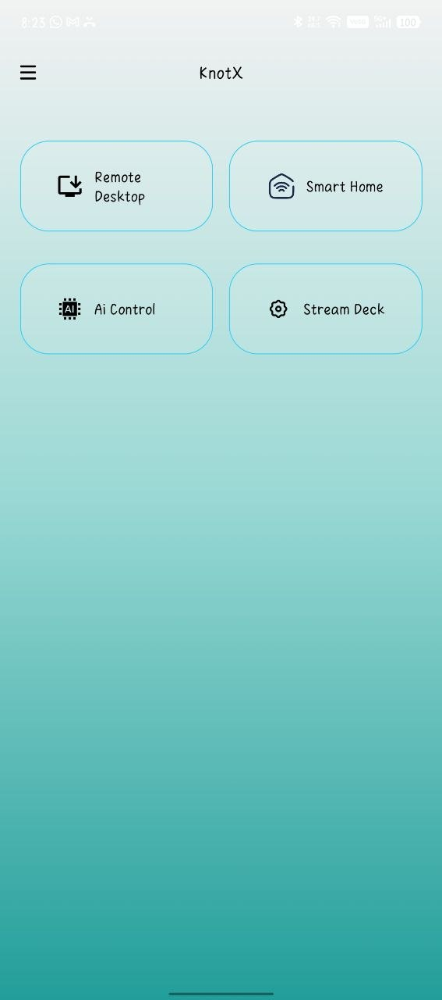
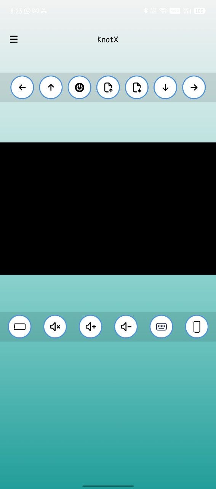
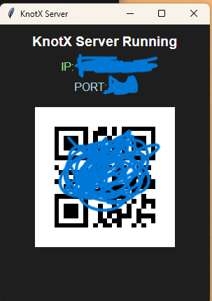

A modular desktop tool system designed for productivity and control. Bring scattered utilities into one focused workspace.



KnotX is a smart environment control system that connects your PC and mobile device into a unified, real-time workspace. By leveraging a shared Wi-Fi or internet connection, it enables seamless communication between devices with minimal setup.Once the desktop application is launched, users can connect their mobile device instantly and access a live screen feed of their PC. The mobile device then functions as a full remote control, allowing users to interact with and manage their system from anywhere.Designed with a modular and lightweight architecture, KnotX simplifies remote control, automation, and multitasking, transforming any smartphone into a powerful control hub for your computer.
Setup & Usage:
1. Run the KnotX desktop application (.exe) on your PC.
2. Start the server from the desktop interface.
3. Ensure both your PC and mobile device are connected to the same Wi-Fi network or internet.
4. Install and open the KnotX mobile application (.apk) on your phone.
5. Enter the IP address shown on the PC, or scan the QR code.
6. Once connected, the mobile device will display a live screen of your PC.
7. Use the mobile interface to control your PC remotely and perform actions in real time.
Your phone now acts as a complete remote control system for your PC.